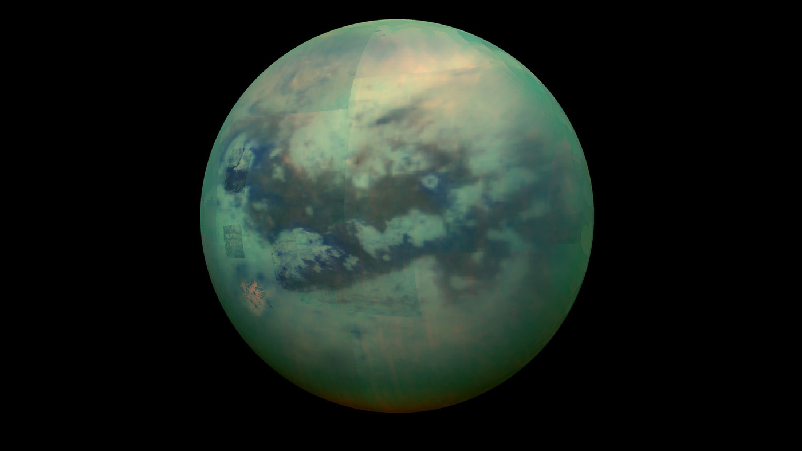

Titan
Saturnov najveći mjesec s gustom atmosferom
Udaljenost od Saturna:
1.221.830 km
Promjer:
5.149 km
Masa:
1.35 × 10²³ kg
Orbitalni period:
15.95 dana
O Titanu
Titan je najveći Saturnov mjesec i drugi najveći mjesec u Sunčevom sustavu, veći čak i od Merkura.
Jedini je mjesec s gustom atmosferom i jedino tijelo osim Zemlje gdje postoje stabilna tekuća
jezera na površini.
Titanove jezera i rijeke sastoje se od tekućeg metana i etana umjesto vode. Cassini-Huygens misija
otkrila je složenu geologiju s dinama, planinama i jezerima. Titan se smatra jednim od najvjerojatnijih
mjesta za postojanje života u Sunčevom sustavu.